To create graphics that are perfectly tailored to your data and not available in MIRO yet, you can also implement your own renderers. More information can be found here.
Graphs
Introduction
Besides the default tabular format, multidimensional GAMS symbols can be visualized as graphs. GAMS MIRO offers comprehensive visualization options. A lot of plotting types are available and only need to be configured, i.e. adapted to your model-specific data.
Advanced: Symbol dimensions
The following sections show some examples for different chart types you can use in MIRO. It is not useful to describe all possible options MIRO supports. Instead, you should just explore it yourself! Start the Configuration Mode and play around with the data until you get a satisfactory result.
Tip:
Pivot table
The default renderer for all symbols is the MIRO pivot table. This powerful tool offers many useful features that allow you to explore your data interactively. Its basic functionality is to filter, aggregate and pivot data. In addition, the tool includes a variety of rendering capabilities that enable dynamic data visualization and analysis. Options range from a traditional table to visually appealing displays such as heat maps, line charts, bar charts, pie charts, scatter plots, time series, and more, making it easy to create charts that meet your analytical needs. Moreover, you can integrate multiple chart types within a single view, allowing for comprehensive data exploration and interpretation. With a good balance between server and client resource usage, it is designed to handle very large amounts of data.
Pivot Table View
The MIRO pivot table renderer offers the ability to store "views," which represent the current configuration of your data. These views can be saved to the database and reloaded alongside the scenario data. One of the key advantages of using views is that they allow you to:
- Save multiple customized representations of your data.
- Eliminate the need for repetitive data slicing and filtering every time you return to the data.
- View the data from different perspectives, enabling a deeper analysis based on specific needs or approaches.
- Quickly access frequently used data filters or specific graph types, which is especially useful when generating result reports or reviewing data in a consistent format.
- Compare and contrast multiple scenarios in the pivot comparison mode, making it easier to analyze different outcomes.
When you save a scenario, all associated views are saved as well, ensuring that your configurations are preserved. To load a view, simply click the "Load view" button and select the desired view from the list. A slice, or "view" of data can be exported as a PNG or CSV file.
Views can either be bound to a scenario like attachments (local view) or registered app-wide (global view). Further general information on views can be found here.
View Settings
Before configuring and saving a view, you need to first
slice and dice the data — apply filters, set the desired
data ranges, and choose the appropriate chart type. Once
your data is prepared, click the "New View" button (
 ). In the opening dialog, you can assign a name to the
view. Depending on the selected chart type, further
optional settings are available.
). In the opening dialog, you can assign a name to the
view. Depending on the selected chart type, further
optional settings are available.
- General: General settings such as the title displayed above the chart/table and axis labels. The tab also contains chart-specific settings such as showing a line chart as a step plot or grouping stacks by a dimension for stacked bar charts.
- Axes: Range limitations for axes, grid settings, axis scaling.
- Combo chart: Depending on the base chart type, you can render selected series as a bar/line/scatter chart.
- Second Axis: Plot selected series on an additional axis, the settings of which you can make here.
- Series Styling: Depending on the chart type, series-specific settings such as custom colours, line dash patterns and border widths can be made here.
Tip:
In a chart, each series is defined by taking one entry from each dimension in the columns. The labels for these dimensions are concatenated using the "․" character (Unicode U+2024) as a separator. When you use features like combo charts or a secondary axis, you can select which series to show from a dropdown menu containing these concatenated labels.
Beyond these automatically generated series, you can
also create custom patterns by adding entries to the
dropdown. This makes it possible to apply specific
settings to any series that matches a certain subset
of the dimension labels. For example, if you define a
pattern named
Topeka, it will
include all series whose labels contain "Topeka",
such as
Seattle.Topeka and
San-Diego.Topeka.
Custom series patterns can also be used to set custom chart colors, border widths, and dashed lines. However, note that only automatically generated series are displayed in the pivot tool. For label-specific series styling, you must edit the JSON directly.
When you save the scenario, all your views are automatically stored as well. Load a view by first clicking on the "Load view" button and then selecting which view to load. Note that as soon as the pivot table is changed, e.g. by changing a filter or moving a dimension, all view settings such as title, axis labels, etc. are reset.

Tip:
Views can either be bound to a scenario or registered app-wide. More on this here.
Pivot Table Settings
A click on the settings ( ) button opens the "Settings" menu. The menu is divided into the sections "General", "Tables" and "Charts". Available settings are:
-
General
Hide empty columns: If enabled, this option allows you to hide empty table columns of the currently visible data. Read more about this option here.
Dimension(s) to limit to a single-selection dropdown filter: The data of each dimension of a pivot table - whether in the rows, columns or in the aggregation - can be filtered. By default, this filter is a multi-choice dropdown menu. This option allows to configure filter dimensions as single-choice dropdown menus. -
Tables
Table summary: You can choose between several summary functions — such as sum, count, mean, and more — for both rows and columns. These summary functions allow you to quickly calculate key metrics about your table data.
Fix table columns to the left: If this option is activated, the columns of the pivot table are fixed to the left side of the table and remain visible when scrolling horizontally. Note that this can cause display problems for very wide tables (e.g. with many columns), especially on small screens. For this reason, this option is automatically disabled for screens less than 768 pixels wide. -
Charts
Font size to use in charts: Option to change the font size used in all charts of the pivot table.
Tip:
As with the view settings, the pivot table settings are saved as part of a view and are automatically applied when a corresponding view is selected. However, in contrast to view settings, anything configured in the pivot table settings menu is retained if the pivot table is modified manually. For example, this ensures that configured single-choice dropdowns or specific table summary functions remain intact, even while interacting with the pivot table. The state only changes if the settings are manually adjusted through the settings menu ( ) or if a different view is selected.
Presentation Mode
A click on the
 button toggles the presentation mode, which allows the
pivot tool to look like a normal graphic renderer without
pivot controls. Only configured views and export buttons
remain visible. The presentation mode can be very useful
for users who do not want to play around with the data in
the pivot tool, but only want to view predefined
views/reports. The combination of predefined views and
the presentation mode, which can be set as the default
display in the Configuration Mode, offers extensive
possibilities for data visualization and in-depth
analyses.
button toggles the presentation mode, which allows the
pivot tool to look like a normal graphic renderer without
pivot controls. Only configured views and export buttons
remain visible. The presentation mode can be very useful
for users who do not want to play around with the data in
the pivot tool, but only want to view predefined
views/reports. The combination of predefined views and
the presentation mode, which can be set as the default
display in the Configuration Mode, offers extensive
possibilities for data visualization and in-depth
analyses.
Default Configuration
You can specify the default view (chart type, settings, etc.) of the pivot table in the Configuration Mode. There are a few configuration options available but unlike other charting tools, you configure most of the MIRO pivot table directly in the preview on the right. For the most comfortable handling, it is advisable to use the preview page across the entire width of the screen by clicking on the switch panel (pie chart symbol) at the top right. Drag and drop the domains where you want them to be, make further general- or chart-type-specific settings (optional) and click on "Save". The symbol is loaded in MIRO with the same view that you have set up in the Configuration Mode.
Example: Model Transport, parameter shipment quantities in cases

Configuration Options
Show presentation mode by default:
If this option is enabled, the
presentation mode will
be shown per default. The pivot controls can be displayed
at any time by clicking on the
 button.
button.
UEL, which indicates a missing value:
Data in a pivot table that indicates a missing value.
This is needed when you want to
hide empty columns in
the table.
Use external default view:
If this option is enabled, a scenario-specific or global
view is used as
the default view for this symbol. If the specified view
does not exist, the default configuration for this symbol
is used.
JSON example
{
"dataRendering": {
"schedule": {
"height": 700,
"options": {
"aggregationFunction": "sum",
"cols": {
"j": null
},
"emptyUEL": "-",
"filter": {
"Hdr": "quantities"
},
"fixedColumns": true,
"hideEmptyCols": false,
"hidePivotControls": true,
"pivotRenderer": "stackedbar",
"rows": "i",
"tableSummarySettings": {
"colEnabled": true,
"colSummaryFunction": "sum",
"rowEnabled": true,
"rowSummaryFunction": "sum"
}
},
"outType": "miroPivot"
}
}
}
Hide empty columns:
The switch to hide empty columns in the
settings menu allows to
hide empty columns in a table. This is especially
useful if you use the MIRO Pivot Table for a
data cube. A data cube is a collection of
GAMS parameters that are combined to form a large cube.
For example, if you have location information in the two
parameters:
ilocData(i,locHdr) and
jlocData(j,locHdr),
you can combine them into a cube with four dimensions:
one dimension to store the name of the GAMS symbols:
symname and the three
dimensions i,
j and
locHdr. Note that the
dimension i is missing
in the parameter
jlocData and vice
versa. So we end up with a sparse cube:
| symname | i | j | locHdr | value |
|---|---|---|---|---|
| ilocData | Seattle | - | lat | 47.61 |
| ilocData | Seattle | - | lng | -122.33 |
| jlocData | - | New-York | lat | 40.73 |
| jlocData | - | New-York | lng | -73.94 |
You probably noticed that in this example missing dimensions in a symbol are filled with -. But we could have chosen any other UEL to indicate missing values. If you would visualize the data of this parameter with the MIRO Pivot Table, you might not want to see columns containing only -. Therefore, the MIRO Pivot Table has the options to hide these empty columns. If enabled, the button to hide/show empty columns is located in the settings dialog.
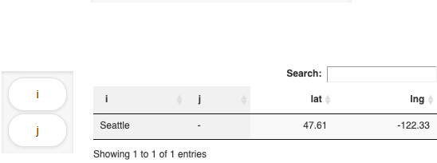

Pie chart
MIRO uses Plotly to render pie charts.
Configuration
Any GAMS symbol with a value column can be displayed as a pie chart.
Example: Model Pickstock, parameter weight
Set symbol 'stock symbol';
Variable w(symbol) 'what part of the portfolio';
$onExternalOutput
Parameter weight(symbol) 'weight of stock';
$offExternalOutput
stock_weight(s) = w.l(s);
In a resulting GDX this parameter looks as follows:

In the Configuration Mode we can then configure a pie chart.

Note:
Instead of the parameter
weight, to which you assign the values of the
variable w, you could have used a pie chart
directly for the levels of variable w. However,
this variable also contains all the zero values (due to
nonzero upper bounds and scale factors) that would then
become visible in the pie chart, see below. If you assign
the levels of the variable w (w.l(symbol)) to the parameter weight instead, zeros will be
squeezed out.
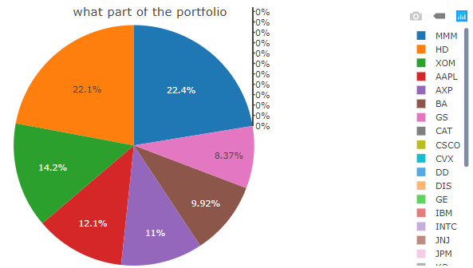
Multi-pie chart:
In a pie chart only one
dimension, i.e. one column of a table, can be displayed.
However, it is possible to display several pie charts for
one symbol at the same time. This makes it possible to
easily distribute a multidimensional symbol over several
pie charts. This is comparable to e.g. a line chart,
where new lines can be displayed by including new table
headers.
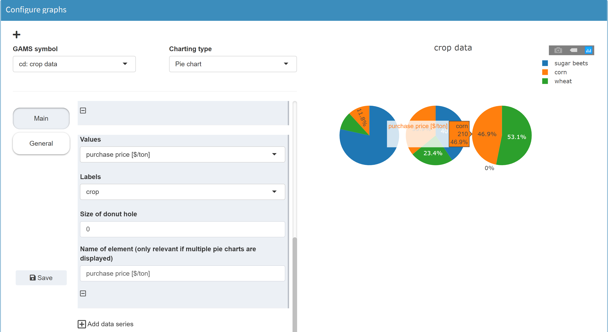
JSON example
{
"dataRendering": {
"stock_weight": {
"outType": "dtGraph",
"graph": {
"title": "Portfolio composition",
"tool": "plotly",
"type": "pie",
"traces": {
"1": {
"labels": "symbol",
"values": "value",
"hole": 0,
"name": "weight"
}
},
"showlegend": true,
"staticPlot": false
},
"height": 700
}
}
}
Donut chart
MIRO uses Plotly to render donut charts.
Configuration
A donut chart is a pie chart with a "hole". In the Configuration Mode the donut chart is therefore to be found under pie chart. In addition to a standard pie chart, only the size of the donut "hole" can be configured.
Example: Model Pickstock, parameter weight
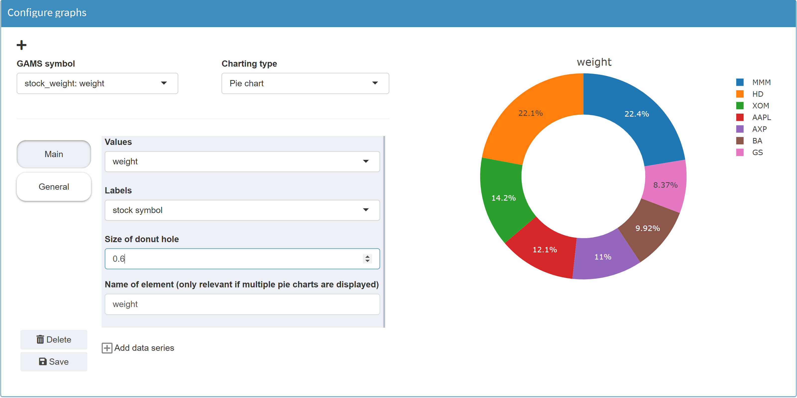
JSON example
{
"dataRendering": {
"stock_weight": {
"outType": "dtGraph",
"graph": {
"title": "Portfolio composition",
"tool": "plotly",
"type": "pie",
"traces": {
"1": {
"labels": "symbol",
"values": "value",
"hole": 0.6,
"name": "weight"
}
},
"showlegend": true,
"staticPlot": false
},
"height": 700
}
}
}
Bar chart
MIRO uses Plotly to render bar charts.
Configuration
If a symbol is to be visualized as a bar chart, an index must be specified for the x-axis as well as for the y-axis. Several data series can be plotted together on the x-axis.
Example: Model Pickstock, parameter weight
Set symbol 'stock symbol';
Variable w(symbol) 'what part of the portfolio';
$onExternalOutput
Parameter weight(symbol) 'weight of stock';
$offExternalOutput
stock_weight(s) = w.l(s);
In a resulting GDX this parameter looks as follows:
In the Configuration Mode we then can configure a bar chart.

Note:
Instead of the parameter
weight, to which you assign the values of the
variable w, you could have used a bar chart
directly for the levels of variable w. However,
this variable also contains all the zero values that
would then become visible in the chart, see the
pie chart example.
JSON example
{
"dataRendering": {
"stock_weight": {
"outType": "graph",
"graph": {
"title": "Portfolio composition",
"tool": "plotly",
"type": "bar",
"barmode": "group",
"ydata": {
"value": {
"label": "weight",
"mode": "lines",
"marker": {
"line": {
"width": 0
},
"color": "#ed0652"
}
}
},
"xdata": "symbol",
"showlegend": false,
"xaxis": {
"title": "stock symbol",
"showgrid": false,
"zeroline": false,
"showticklabels": true,
"categoryorder": "trace"
},
"yaxis": {
"title": "weight",
"showgrid": false,
"zeroline": false,
"showticklabels": true,
"categoryorder": "trace"
}
},
"height": 700
}
}
Scatter plot
MIRO uses Plotly to render scatter plots.
Configuration
Example: Model Pickstock, parameter absolute error
The parameter to plot represents the absolute errors in
the training phase.
We define a parameter
abserror(td, 'absolute error train')
(last row), to which we assign the values of the
parameter
error(d), but only
those values where
ord(d) <= trainingdays.
Set date 'date';
Parameter error(date) 'Absolute error';
td(d) = ord(d) <= trainingdays;
ntd(d) = not td(d);
solve pickStock min obj using mip;
error(d) = abs(index(d)-fund(d));
Set errHdr 'stock symbol header' / 'absolute error train', 'absolute error test' /;
$onExternalOutput
Table abserror(date,errHdr) 'absolute error';
$offExternalOutput
abserror(td, 'absolute error train') = error(td);
abserror(ntd,'absolute error test') = error(ntd);
In a resulting GDX this parameter looks as follows:

In the Configuration Mode we then can configure a scatter plot.

JSON example
{
"dataRendering": {
"abserror": {
"outType": "graph",
"graph": {
"title": "Absolute error",
"tool": "plotly",
"type": "scatter",
"ydata": {
"absolute error train": {
"label": "absolute error train",
"mode": "markers",
"fill": "none",
"marker": {
"symbol": "circle",
"opacity": 1,
"size": "12",
"line": {
"width": "2",
"color": "#000000"
},
"color": "#ff0000"
},
"showlegend": false
}
},
"xdata": "date",
"showlegend": true,
"xaxis": {
"title": "date",
"showgrid": false,
"zeroline": false,
"showticklabels": true,
"categoryorder": "trace",
"rangefrom": "2016-01-01",
"rangeto": "2016-05-01"
},
"yaxis": {
"title": "absolute error train",
"showgrid": false,
"zeroline": false,
"showticklabels": true,
"categoryorder": "trace"
}
},
"height": 700
}
}
}
Line chart
MIRO uses Plotly to render line charts.
Configuration
Line charts also include area charts.
Example: Model Pickstock, parameter absolute error
For an example in GAMS, see the scatter plot example.

JSON example
{
"dataRendering": {
"abserror": {
"outType": "graph",
"graph": {
"title": "Absolute error",
"tool": "plotly",
"type": "scatter",
"ydata": {
"absolute error train": {
"label": "absolute error train",
"mode": "lines",
"line": {
"width": 2,
"shape": "linear",
"dash": "solid"
},
"showlegend": false,
"fill": "tozeroy"
},
"absolute error test": {
"label": "absolute error test",
"mode": "lines",
"line": {
"width": 2,
"shape": "linear",
"dash": "solid"
},
"showlegend": false,
"fill": "tozeroy"
}
},
"xdata": "date",
"showlegend": true,
"xaxis": {
"title": "date",
"showgrid": false,
"zeroline": false,
"showticklabels": true,
"categoryorder": "trace"
},
"yaxis": {
"title": "absolute error train",
"showgrid": false,
"zeroline": false,
"showticklabels": true,
"categoryorder": "trace"
},
"plot_bgcolor": "rgba(95,95,95,0.08)"
},
"height": 700
}
}
}
Bubble chart
MIRO uses Plotly to render bubble charts.
Configuration
A bubble chart is a scatter diagram with an additional dimension in the form of the size of the "bubbles".
Example: Model Pickstock, parameter absolute error
For an example in GAMS, see the scatter plot example.

JSON example
{
"dataRendering": {
"abserror": {
"outType": "graph",
"graph": {
"title": "Absolute error",
"tool": "plotly",
"type": "bubble",
"ydata": {
"absolute error train": {
"label": "absolute error train",
"mode": "markers",
"marker": {
"symbol": "circle",
"opacity": 1,
"size": "absolute error train",
"color": "absolute error train",
"line": {
"width": 0
},
"maxsize": 20
},
"showlegend": false
}
},
"xdata": "date",
"showlegend": false,
"xaxis": {
"title": "date",
"showgrid": false,
"zeroline": false,
"showticklabels": true,
"categoryorder": "trace",
"rangefrom": "2016-01-01",
"rangeto": "2016-05-01"
},
"yaxis": {
"title": "absolute error train",
"showgrid": false,
"zeroline": false,
"showticklabels": true,
"categoryorder": "trace"
}
},
"height": 700
}
}
}
Histogram
MIRO uses Plotly to render histograms.
Configuration
Example: Model Pickstock, parameter absolute error
For an example in GAMS, see the scatter plot example.

JSON example
{
"dataRendering": {
"abserror": {
"outType": "graph",
"graph": {
"title": "Absolute error",
"tool": "plotly",
"type": "hist",
"xdata": {
"absolute error train": {
"labels": "absolute error train",
"color": "rgba(40,181,35,0.73)"
},
"absolute error test": {
"labels": "absolute error test",
"color": "rgba(255,0,0,0.62)"
}
},
"histnorm": "",
"nbins": 5,
"barmode": "overlay",
"alpha": 0.6,
"xaxis": {
"title": "absolute error train"
},
"cumulative": false,
"horizontal": false,
"yaxis": {
"title": "Frequency"
},
"showlegend": true
},
"height": 700
}
}
}
Map
MIRO uses Leaflet to render maps.
Configuration
Example: Model Transport, parameter shipment quantities in cases
The parameter to plot represents the shipment quantities
between canning plants and markets.
Set
i 'canning plants'
j 'markets'
scheduleHdr 'schedule header' / 'lngP', 'latP', 'lngM', 'latM', 'cap', 'demand', 'quantities' /;
$onExternalOutput
Table schedule(i,j,scheduleHdr) 'shipment quantities in cases';
$offExternalOutput
schedule(i,j, 'lngP') = iLocData(i,'lng');
schedule(i,j, 'latP') = iLocData(i,'lat');
schedule(i,j, 'lngM') = jLocData(j,'lng');
schedule(i,j, 'latM') = jLocData(j,'lat');
schedule(i,j, 'cap') = a(i);
schedule(i,j, 'demand') = b(j);
schedule(i,j, 'quantities') = x.l(i,j);
To be able to set markers on a map, the map tool requires
latitude and longitude information. By declaring the
parameter schedule as
a table, the elements
of the last index set
scheduleHdr (lngP, latP, lngM, latM, cap, demand, quantities) can be used for the map configuration. You can find a
detailed example
here.
In a resulting GDX this parameter looks as follows:
In the Configuration Mode we then can configure a map.

Tip:
Instead of a table with the geographic information in the header, we can also use a parameter or even a set that contains all latitude and longitude information in separate domains:
$onExternalOutput
Parameter schedule(i,j,latP, lngP, latM, lngM) 'shipment quantities in cases';
$offExternalOutput
schedule('Seattle', 'New-York', '47.608013', '-122.335167', '40.730610', '-73.935242') = 50;
schedule('Seattle', 'Chicago', '47.608013', '-122.335167', '41.881832', '-87.623177') = 300;
schedule('San-Diego','New-York', '32.715736', '-117.161087', '40.730610', '-73.935242') = 275;
schedule('San-Diego','Topeka', '32.715736', '-117.161087', '39.056198', '-95.695312') = 275;
The geographic information is then no longer available in numerical form, but the map tool interprets the data properly.
With regard to map-based graphics, a multitude of possible visualizations are conceivable. In the Configuration Mode of MIRO, the following features can be realized on a map:
-
Markers
Markers can be set. For this purpose, the position of the markers must be available in the data as longitude and latitude information (see table above). Marker labels can be set dynamically, i.e. based on data. In the following example, the marker label is set to Market: [j]. If you now click on a marker on the resulting map, the label will not be Market: [j]. Instead, the [j] is replaced with the element of the GAMS index set belonging to the marker (here: Chicago).The second index of the symbol schedule contains the markets j. The indices lngM and latM were selected as longitude and latitude data. For a given longitude-latitude combination, the corresponding element from the second index j is now displayed as label.
-
Flows
Flows can be displayed between different points on the map. If configured accordingly, the thickness of the arrows can depend on the flow data. The data overview from the table above also helps to understand this: In the example below the flows have been configured to point from lngP/latP to lngM/latM. The thickness depends on the data in the column quantities.Note:Flows cannot be configured for sets, since numeric values are required for the flow data.
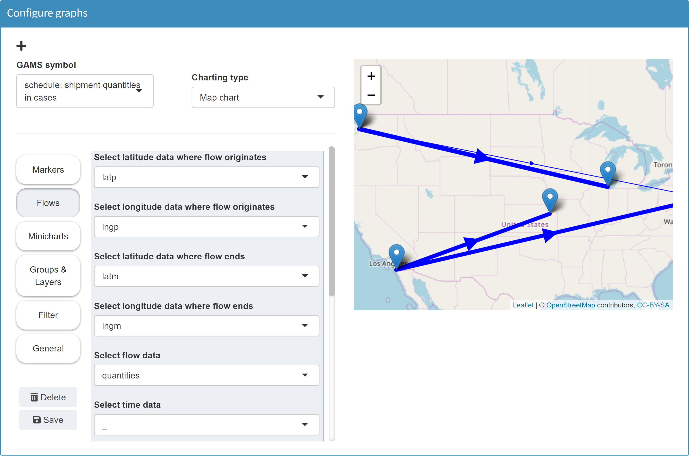Unique flow labels:When configuring flows, you can optionally specify a unique label for each flow. This label appears when you click on a flow. It is important that the label is different for each flow. If this is not the case, only one flow is displayed for each duplicated label. A suitable configuration for a label is to specify the originator and the recipient for each flow. You can achieve this by using the square brackets syntax to address the symbol/data domains. In the example above the symbol schedule is used to display a map:
Set i 'canning plants' j 'markets' scheduleHdr 'schedule header' / 'lngP', 'latP', 'lngM', 'latM', 'cap', 'demand', 'quantities' /; $onExternalOutput Table schedule(i,j,scheduleHdr) 'shipment quantities in cases'; $offExternalOutputOriginator and recipient in this case are the domains i and j of the symbol schedule. If you configure the label as follows: From [i] to [j] - then the originator and recipient cities appear as labels for each arrow:
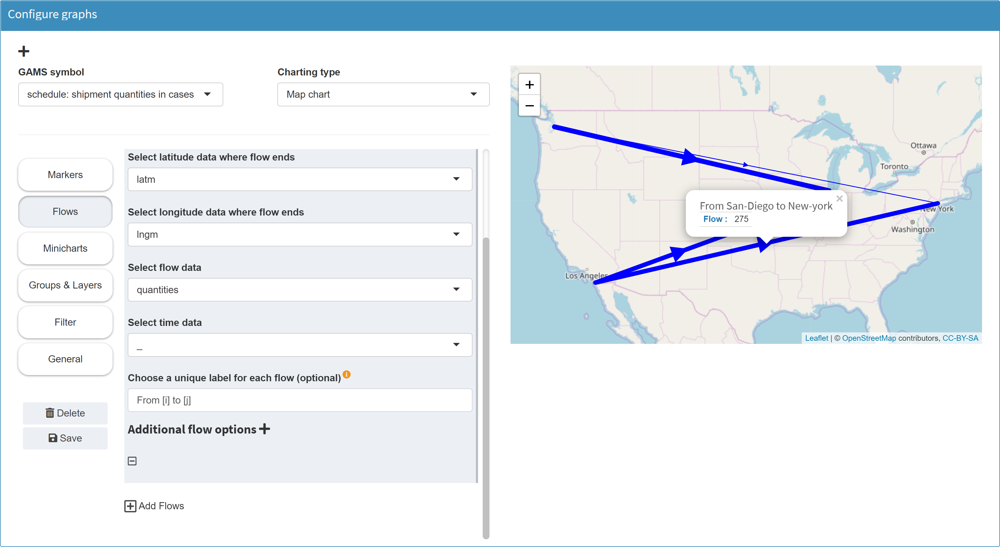 -
Charts
You can display small diagrams on your map. The following example shows a pie chart for each of the 16 German states.Example: Model Simple (see GAMS MIRO gallery), parameter energy mix report
The graph is based on the data below: 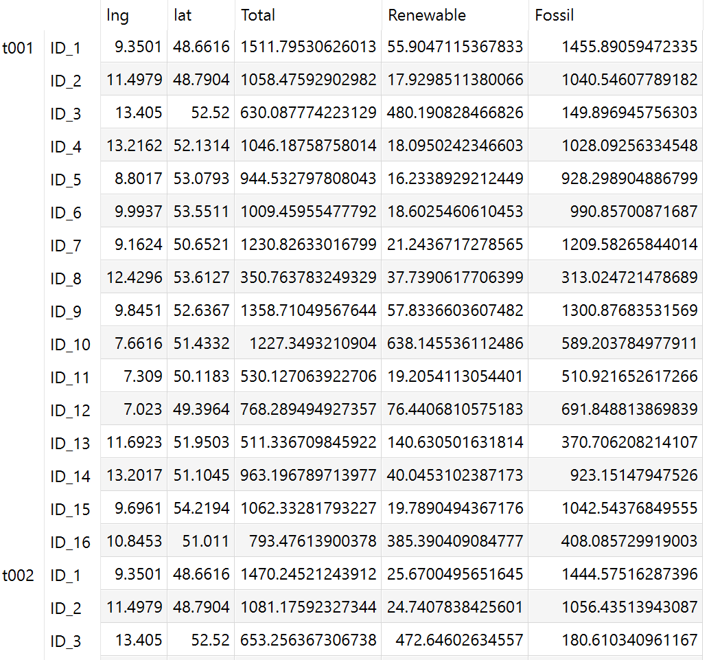The position of each pie chart results from a longitude/latitude combination. The data of the pie chart for each state were determined in Configuration Mode with Renewable and Fossil.
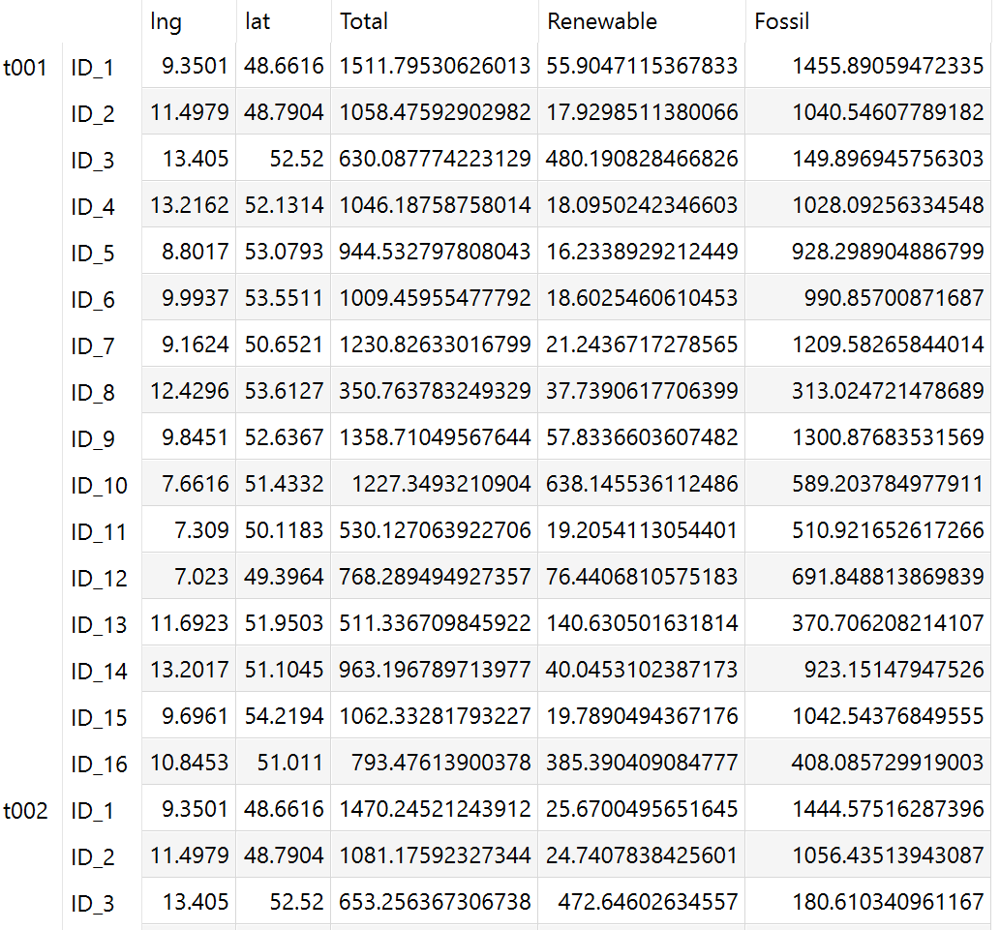The position of each pie chart results from a longitude/latitude combination. The data of the pie chart for each state were determined in Configuration Mode with Renewable and Fossil.
You also have the option to define a time dimension in the charts. The data of the example covers a period of one year with a resolution of one hour. The first column was defined as the time dimension (starting with t001. In this way, a separate pie chart is displayed for each period for each state (see play button at the bottom right of the map).Note:Charts on maps cannot be configured for sets, because numeric values are required for the chart data.
Note that all data of your entire graph must come from the same GAMS symbol. If you want to have more sophisticated graphics, it may make sense to combine data from different symbols in one symbol. Or you can use our R API and create your own graphics.
Layers
For map visualizations it can be
helpful to display different layers, e.g. with markers.
In Configuration Mode you can specify such layers. In the
resulting graphic you can select the different layers and
display only the corresponding markers.
Example: Model Transport, parameter shipment quantities in cases

JSON example
{
"dataRendering": {
"schedule": {
"outType": "graph",
"graph": {
"title": "shipment quantities in cases",
"tool": "leaflet",
"layersControl": {
"options": {
"collapsed": true
},
"position": "topright",
"baseGroups": ["plants", "markets"]
},
"markers": {
"1": {
"lng": "lngp",
"lat": "latp",
"labelOptions": {
"textsize": "12px",
"permanent": false
},
"label": "Plant [i]",
"group": "plants"
},
"2": {
"lng": "lngm",
"lat": "latm",
"labelOptions": {
"textsize": "12px",
"permanent": false
},
"label": "Market [j]",
"group": "markets"
}
},
"flows": {
"1": {
"lng0": "lngp",
"lat0": "latp",
"lng1": "lngm",
"lat1": "latm",
"flow": "quantities",
"color": "#0000ff",
"minThickness": 1,
"maxThickness": 10
}
}
},
"height": 700
}
}
}
Time series diagram
MIRO uses DyGraphs to render time series diagrams.
Configuration
As the name of the graphic type suggests, this chart type is useful if you want to visualize time series data. An important property of such time series is the format of the data. You should make sure that the elements of the index set, which should represent the time component of your graphic, have their data available in a date format or at least can be formatted into such a format. A suitable syntax for a date would be yyyy-MM-dd, e.g. 2014-07-13. For a finer granularity, the format yyyy-MM-dd HH:mm:ss is recommended.
Example: Model Pickstock, parameter dow jones vs. index fund
Set date 'date'
fHdr 'fund header' / dj 'dow jones','index fund' /;
$onExternalOutput
Table dowVSindex(date,fHdr) 'dow jones vs. index fund';
$offExternalOutput
dowVSindex(d,'dj') = index(d);
dowVSindex(d,'index fund') = fund(d);
The index set date looks as follows:

The parameter dowVSindex:

In the Configuration Mode we then can configure a time series diagram:

The picture in this example shows a red dotted vertical
line showing the "last day of training phase". A scalar
output value has been integrated into the graph to define
this event.
Note: To use such a scalar in
the graphic, MIRO must of course know this symbol. You
therefore need to tag it with
$onExternalInput /
$offExternalInput or
$onExternalOutput /
$offExternalOutput in
the GAMS model.
Tip:
You want to use a scalar value in a graph but not in the scalars table in MIRO? You can do this by hiding that symbol.
The tool for creating time series diagrams supports the integration of static or dynamic scalar values. A static value could show a limit in the data in the form of a horizontal line. A dynamic scalar can be a date which results from the model calculations (i.e. output scalar) and is displayed in the graphic as an vertical event line.
Note:
Dynamic scalar values can only be displayed in graphics of output symbols!
The following options are available:
-
Event line

-
Limit line

-
Annotation

-
Shading

JSON example
{
"dataRendering": {
"dowvsindex": {
"outType": "graph",
"graph": {
"title": "Dow Jones vs. Index fund",
"tool": "dygraphs",
"xdata": "date",
"ydata": {
"dj": {
"label": "dow jones",
"stemPlot": false,
"stepPlot": false,
"fillGraph": false,
"drawPoints": false,
"pointShape": "dot",
"pointSize": 2
},
"index fund": {
"label": "index fund",
"stemPlot": false,
"stepPlot": false,
"fillGraph": false,
"drawPoints": false,
"pointShape": "dot",
"pointSize": 2
}
},
"dyOptions": {
"includeZero": false,
"logscale": false,
"drawGrid": true,
"stepPlot": false,
"stemPlot": false,
"fillGraph": false,
"fillAlpha": 0.15,
"drawPoints": false,
"pointShape": "dot",
"pointSize": 2
},
"dyHighlight": {
"highlightCircleSize": 3,
"highlightSeriesBackgroundAlpha": 0.5,
"hideOnMouseOut": true
},
"xaxis": {
"title": "date"
},
"yaxis": {
"title": "dow jones"
},
"dyRangeSelector": {
"height": 30,
"strokeColor": "#808fab",
"fillColor": "#a7b1c4",
"retainDateWindow": false,
"keepMouseZoom": true
},
"dyEvent": {
"lastdaytraining": {
"labelLoc": "top",
"color": "rgb(255,0,0)",
"strokePattern": "dashed",
"label": "last day of training phase"
}
}
},
"height": 700
}
}
}
Gantt chart
MIRO uses timevis to render gantt charts.
Configuration
The GAMS symbol whose data is to be visualized as a Gantt chart must contain the following index sets:
-
Start
Each event must have a start date. The GAMS elements of this set must be in date format, e.g. yyyy-mm-dd hh:mm:ss (hh:mm:ss is not required). -
Content
Each event must have a content which is then shown as a label. The GAMS elements of the underlying set can be of any format.
Optional index sets of the GAMS Symbol:
-
End
If an event is not a single point in time, but rather a range, you can specify an end date. The GAMS elements of this set must be in date format. -
Title
A title is shown when you hover over an item. The GAMS elements of this set can be of any format. -
Group
When a group variable is specified, elements of the same group are grouped together. The GAMS elements of this set can be of any format.
Note:
The index sets of the GAMS symbol do not have to be named start, end, content etc. Only the mapping you define in the Configuration Mode is relevant.
As an example we use a GAMS Parameter gantt with index sets id, start, end, content and group:
Set
id 'gannt_id' / 1, 2, 3, 4, 5, 6 /
start 'gannt_start' / '2016-01-04 10:00:00', '2016-01-05 10:30:00', '2016-01-06 10:50:00', '2016-01-07 14:00:00', '2016-01-08 14:45:00', '2016-01-09 19:00:00' /
end 'gannt_end' / '2016-01-05 10:00:00', '2016-01-06 10:30:00', '2016-01-07 10:50:00', '2016-01-08 14:00:00', '2016-01-09 14:45:00', '2016-01-10 19:00:00' /
content 'gannt_content' / test1, test2, test3, test4, test5, test6 /
group 'gantt_group' / a, b /
;
$onExternalOutput
Parameter gantt(id, start, end, content, group) 'Gantt chart parameter' ;
$offExternalOutput
gantt('1', '2016-01-04 10:00:00', '2016-01-05 10:00:00', 'test1', 'a') = 1;
gantt('2', '2016-01-05 10:30:00', '2016-01-06 10:30:00', 'test2', 'a') = 1;
gantt('3', '2016-01-06 10:50:00', '2016-01-07 10:50:00', 'test3', 'a') = 1;
gantt('4', '2016-01-07 14:00:00', '2016-01-08 14:00:00', 'test4', 'b') = 1;
gantt('5', '2016-01-08 14:45:00', '2016-01-09 14:45:00', 'test5', 'b') = 1;
gantt('6', '2016-01-09 19:00:00', '2016-01-10 19:00:00', 'test6', 'b') = 1;In a resulting GDX this parameter looks as follows:

In the Configuration Mode we can then configure a Gantt chart.
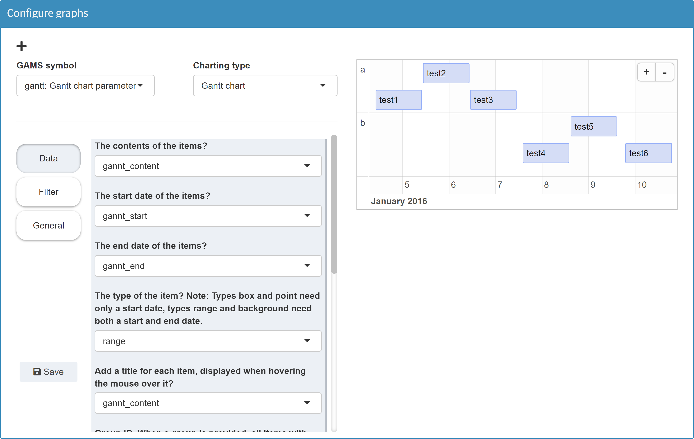
More information on the tool we use for Gantt charts can be found here.
JSON example
{
"dataRendering": {
"gantt": {
"outType": "graph",
"graph": {
"title": "",
"tool": "timevis",
"showZoom": true,
"fit": true,
"zoomFactor": 0.5,
"series": {
"1": {
"content": "content",
"start": "start",
"type": "range",
"end": "end",
"title": "content",
"group": "group",
"groupTitle": "group"
}
},
"editable": false,
"multiselect": false,
"showCurrentTime": false
},
"height": 700
}
}
}
Value box
Configuration
Example: Model Pickstock, scalars error_train, error_test and error_ratio, singleton sets firstDayTraining and lastDayTraining
Value boxes are special in the sense that only scalar output values (including singleton sets declared as output data) can be displayed as such. The other way around, scalar output values can only be visualized as value boxes in addition to the classic table.
The three scalars to plot represent the absolute error in
the entire training phase, the absolute error in the
entire testing phase and the ratio between both values.
The scalar
error_train is
equivalent to the objective function value
obj.l. The absolute
error in entire testing phase
error_test is the sum
of all errors in this time:
sum(ntd, error(ntd)).
The ratio of both values is calculated with
error_ratio = error_test/error_train;.
In addition to these numerical values, two singleton sets
are used to indicate the dates of the beginning and end
of the training period.
$onExternalOutput
Scalar error_train 'Absolute error in entire training phase'
error_test 'Absolute error in entire testing phase'
error_ratio 'Ratio between error test and error train';
Singleton Set
firstDayTraining(date) 'first date of training period'
lastDayTraining(date) 'last date of training period';
$offExternalOutput
error_train = obj.l;
error_test = sum(ntd, error(ntd));
if(error_train > 0,
error_ratio = error_test/error_train;
else
error_ratio = inf;);
lastDayTraining(td) = td.pos = card(td);
firstDayTraining(td) = td.pos = 1;
In the Configuration Mode we can configure the
value boxes by selecting the symbol
Output Scalars:

For a value box, the descriptive text (default: explanatory text of the symbol), the color of the box, an optional icon and the rounding behavior can be configured. The width of a value box results from the number of boxes in a row. Each box can be placed in the desired position by drag & drop. Free rows are ignored.
JSON example
{
"dataRendering": {
"_scalars_out": {
"outType": "valueBox",
"options": [
{
"error_train": {
"description": "Absolute error in entire training phase",
"color": "green",
"icon": {
"name": "_",
"lib": "font-awesome"
},
"round": 4
},
"error_test": {
"description": "Absolute error in entire testing phase",
"color": "yellow",
"icon": {
"name": "_",
"lib": "font-awesome"
},
"round": 4
}
},
{
"error_ratio": {
"description": "Ratio between error test and error train",
"color": "red",
"icon": {
"name": "_",
"lib": "font-awesome"
},
"round": 1
}
},
{
"firstdaytraining": {
"description": "first date of training period",
"color": "aqua",
"icon": {
"name": "circle-play",
"lib": "font-awesome"
},
"round": 0
},
"lastdaytraining": {
"description": "last date of training period",
"color": "aqua",
"icon": {
"name": "ban",
"lib": "font-awesome"
},
"round": 0
}
}
]
}
}
}
Dashboard
A dashboard is an interactive tool with different data views. It is navigated via the ‘tiles’ (value boxes) on the right-hand side of the screen. A data view is shown if the corresponding value box is clicked. It can display multiple charts and tables. Further possible interactions include:
- Interactive filtering of the displayed data
- Toggling between a range of chart/table types
- Exporting the chart/data as a png/csv file
In contrast to other types of visualization, data from several symbols can be displayed in the dashboard (similar to a custom renderer). However, note that, as with a custom renderer, this is in fact a visualization for one symbol (i.e. one tab in your application) and is configured accordingly.
Configuration
The dashboard configuration takes place in the dataRendering section of the <modelname>.json file. The configuration includes:
- Configuration of the tiles (value boxes), which are used to navigate between views in the dashboard. The boxes can display scalar values (optional).
- Configuration of the view to be displayed when clicking on a value box. A view can contain several charts/tables.
- Configuration of the individual charts/tables.
The layout of the configuration is as follows:
{
"dataRendering": {
"<lowercase_symbolname>": {
"outType": "dashboard",
"additionalData": [],
"options": {
"valueBoxesTitle": "",
"valueBoxes": {
...
},
"dataViews": {
...
},
"dataViewsConfig": {
...
}
}
}
}
}
The JSON schema, against which the configuration of the
"options" object is
validated when the application is started, can be found
here
(search for dashboardOptions in
section definitions)
In the following, the dashboard configuration is demonstrated using a parameter macrolevel(mac,sim_miro).
additionalData
A dashboard can display the data of other GAMS input and
output symbols that are included in MIRO. For the
dashboard to access this data, the corresponding symbols
must be specified under
"additionalData". Note
that only multidimensional symbols should be listed here,
as all scalar data is available to the renderer anyway.
Example:
{
"dataRendering": {
"macrolevel": {
"outType": "dashboard",
"additionalData": ["macroperc", "npergdpcomp", "rpergdpcomp", "nperabsorpcomp", "rperabsorpcomp", "qxpc"],
"options": {
"valueBoxesTitle": "",
"valueBoxes": {
...
},
"dataViews": {
...
},
"dataViewsConfig": {
...
}
}
}
}
}
Tip:
If data from other output symbols is only to be displayed in the dashboard, it is a good idea to hide their own tabs. This can be done with the hiddenOutputSymbols option for multidimensional output symbols and hiddenOutputScalars for scalar output symbols.
valueBoxesTitle
Title to be displayed above the value boxes section in the dashboard.
Example:
{
"dataRendering": {
"macrolevel": {
"outType": "dashboard",
"additionalData": ["macroperc", "npergdpcomp", "rpergdpcomp", "nperabsorpcomp", "rperabsorpcomp", "qxpc"],
"options": {
"valueBoxesTitle": "Summary indicators",
"valueBoxes": {
...
},
"dataViews": {
...
},
"dataViewsConfig": {
...
}
}
}
}
}
valueBoxes
Configuration for the value boxes (tiles) in the dashboard. A value box can display a title and a scalar value (optional). A value box can be linked to a data view that is displayed when the box is clicked.
A value box has several properties that can be
configured. Each property of the
"valueBoxes"
configuration must always be specified so that all arrays
have the same length. An example will be given below.
-
"id": Each value box needs a unique id. The id of a data view (with charts and tables) is linked to the id of a value box. This can be any string without spaces. Value boxes can also be used without a corresponding view. -
"title": Title that is displayed in the value box. -
"color": Each value box can have an individual color. The color code can either be provided as hexadecimal color code (e.g. '#29B675') or can be chosen from the following options: 'red', 'yellow', 'aqua', 'blue', 'light-blue', 'green', 'navy', 'teal', 'olive', 'lime', 'orange', 'fuchsia', 'purple', 'maroon', 'black'. -
"icon": Each value box can have an individual icon. For all available icons see fontawesome.com. -
"valueScalar": If the value box should display a value, this needs to be configured here. Valid valueScalar entries are scalar output symbols of the model, which are used in MIRO. The level of scalar variables or equations can also be displayed. To enable this, the joint symbol data _scalarsve_out must be specified under"additionalData". Names must be specified in lower case. -
"prefix": Any string that is displayed before the value. If '+' is defined as a prefix, a '+' is appended to a positive value. If the value is negative, the sign automatically changes to '-'. -
"postfix": String that is displayed after the value. -
"redPositive": Positive values are displayed in green by default, negative values in red. If this logic should be reversed (positive: red, negative: green), the redPositive property of the value box must be set to true, otherwise false. -
"noColor": If the value of the value box should not have a red/green color, but should be gray instead, the noColor property needs to be set to true, otherwise false. -
"decimals": Number of decimal places that should be displayed for a value.
Example:
{
"dataRendering": {
"macrolevel": {
"outType": "dashboard",
"additionalData": ["macroperc", "npergdpcomp", "rpergdpcomp", "nperabsorpcomp", "rperabsorpcomp", "qxpc"],
"options": {
"valueBoxesTitle": "Summary indicators",
"valueBoxes": {
"id": ["summary","gdp","absorption","production"],
"color": ["#848991","olive","aqua","#3c8dbc"],
"icon": ["chart-line","money-bill-trend-up","credit-card","industry"],
"title": ["MACROECONOMIC INDICATORS","GDP","ABSORPTION","PRODUCTION"],
"prefix": ["+","+","+","+"],
"postfix": ["%","%","%","%"],
"redPositive": [false,false,false,false],
"noColor": [false,false,false,false],
"valueScalar": [null,"gdp","absorption","production"],
"decimals": [2,2,2,2]
},
"dataViews": {
...
},
"dataViewsConfig": {
...
}
}
}
}
}
dataViews
A data view is shown if the corresponding value box is
clicked in the dashboard. It can display multiple charts
and tables. In
"dataViews" you define
how many charts/tables a view should contain. The actual
configuration of the charts/tables is done in
"dataViewsConfig" (see
below).
The id of a data view (e.g.
"summary" in the
example below) must match the id of a value box in
"valueBoxes". This
represents the link between the value box and the view.
The elements within the ID array (or object) identify the
individual charts/tables. After such an id of an
individual chart, (e.g.
"macro1" in the
example below), the title is specified, which is
displayed above the chart/table in the dashboard. One can
also use the empty string
"" to display no
header. Note that IDs must not contain spaces.
Example:
{
"dataRendering": {
"macrolevel": {
"outType": "dashboard",
"additionalData": ["macroperc", "npergdpcomp", "rpergdpcomp", "nperabsorpcomp", "rperabsorpcomp", "qxpc"],
"options": {
"valueBoxesTitle": "Summary indicators",
"valueBoxes": {
"id": ["summary","gdp","absorption","production"],
...
},
"dataViews": {
"summary": [
{"macro1": "Macroeconomic indicators (real, percentage change)"},
{"macro2": ""}
],
"gdp": [
{"gdp1": "Composition of GDP (nominal, percentage change)"},
{"gdp2": "Composition of GDP (real, percentage change)"}
],
"absorption": [...],
"production": [...]
},
"dataViewsConfig": {
...
}
}
}
}
}
Note:
All keys in the <modelname>.json file are sorted alphabetically when the Configuration Mode is started. In order to leave the order of charts/ tables within a dataView in the dashboard unaffected by this, we recommend using an array of objects for the dataViews.
dataViewsConfig
All individual charts/tables are configured here. A
separate configuration in
"dataViewsConfig" is
required for each chart listed in the
"dataViews". The IDs
need to be the same.
A data view configuration describes how the underlying data should be filtered, pivoted, aggregated and which renderer should be used per default. The configuration of a chart is almost the same as that of a configured view in the pivot table (learn more about pivot table views here). The easiest way to configure a dashboard chart is therefore as follows:
- Start the MIRO app, load a scenario with results data (or solve first).
- Navigate to the symbol that should be used for the desired chart/table. The renderer of the symbol must be a pivot table (default).
-
In the pivot table, slice and dice data as desired,
select a charting type and save the view by clicking on
the
+on the left side of the pivot table. - Click on Scenario → Edit metadata in the top right corner of the app and switch to the View tab in the dialog box that opens.
- Select the configured view (or several views) by clicking on it and click on Download views.
-
Open the downloaded json file and auto-format the
contents if necessary. The result can look like this:
{ "macroperc": { "macro1": { "aggregationFunction": "sum", "pivotRenderer": "bar", "domainFilter": { "default": null }, "tableSummarySettings": { "rowEnabled": false, "rowSummaryFunction": "sum", "colEnabled": false, "colSummaryFunction": "sum" }, "rows": "mac", "filter": { "sim_miro": "scenario" }, "chartOptions": { "title": "Macroeconomic indicators (real, percentage change)" } } } } -
Many settings of a view can be copied 1:1 for the
configuration of a chart in the dashboard (see example
below). Note that the
"title"in"chartOptions"is ignored. Instead, the title provided in"dataViews"is used."domainFilter"is ignored as well. -
In addition to the attributes of the downloaded
pivot-table view, there are further attributes
available in the dashboard configuration:
-
"data": Symbol name that the data should come from. If not provided, it is assumed that the symbol that the renderer is based on should be used. -
"userFilter": Adds multi drop down menu(s) to a chart/table in which elements of the configured dimension can be selected for being rendered.Instead of providing symbol dimensions, one can also set a"dataViewsConfig"ID. As a result, the filter(s) set in the corresponding chart of that ID is/are also applied here. Example:
In this example, the{ "macroperc": { "macro1": { ..., "data": "macroperc", "userFilter": "mac" }, "macro2": { ..., "data": "macroperc", "userFilter": "macro1" } } }"macro1"chart will have a filter drop down menu based on all elements in the"mac"dimension of the symbol"macroperc". Filters selected in that chart will automatically be applied to"macro2"as well since it uses"userFilter": "macro1". -
"customLabels": Listing of individual elements that should be relabeled in the chart/table. Note that applying custom labels to a dataset can be compute-intensive depending on the amount of data. The time it takes to render the output might increase significantly. It is always a good idea to use appropriate labels in the GAMS model already. Example:{ "macroperc": { "macro1": { ..., "chartOptions": { "customLabels": { "a_Agr": "Agriculture", "a_Const": "Construction" } } } } } -
"customLabelsOrder": Labels named here are displayed in charts/tables in the order specified by the user. Labels that are not mentioned retain the original sort order and are positioned after the explicitly listed labels. If labels that have already been given a new name using"customLabels"are to be sorted, the new name can be used in"customLabelsOrder"as well as the original label. Example:{ "macroperc": { "macro1": { [...], "chartOptions": { "customLabels": { "a_Agr": "Agriculture", "a_Const": "Construction" }, "customLabelsOrder": ["Construction", "Agriculture"] } } } }For a more detailed example see here.
Note: If a parameter spans multiple dimensions in the rows, the entries in
"customLabelsOrder"can either:-
include the corresponding labels for each dimension, concatenated with a
․(Unicode Character U+2024) as a separator. Labels are provided as an array. Example:{ "customLabelsOrder": [ "Services․Construction", "Primary․Agriculture" ] }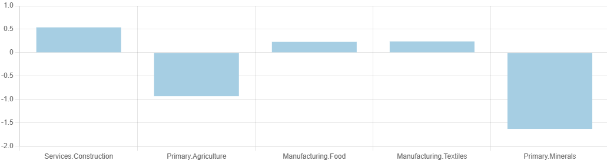 -
be specified on a per-dimension basis using an object. Each dimension's name becomes a key, and the value is an array indicating the desired order of labels for that dimension. For example:
{ "customLabelsOrder": { "agrp": [ "Primary", "Manufacturing", "Services" ] } }Here,
agrpis the dimension name, and the array lists the labels in the order they should appear.
-
-
"customSeriesOrder": Allows an individual order in which selected series are plotted in a chart or in which order selected columns are displayed in a table/heatmap. Series/columns that are not mentioned retain the original sort order and are positioned after the explicitly listed series/columns. Example:
For a more detailed example see here.{ "macroperc": { "macro1": { [...], "chartOptions": { "customSeriesOrder": ["Primary", "Manufacturing", "Services"] } } } } -
"hideLegend": If set totrue, no legend is displayed in the corresponding chart. This can be useful, for example, to avoid value legend entries for individual data series. Example:{ "macroperc": { "macro1": { [...], "chartOptions": { "hideLegend": true } } } } -
"heatmapType": If set to2, an alternative heatmap renderer will be used that shows different colors for positive and negative values. Example:{ "macroperc": { "macro1": { [...], "chartOptions": { "heatmapType": 2 } } } } -
"decimals": Number of decimal places to be displayed in a chart/table. -
"colWidth": Specifies the width of the chart. Must be between 1 and 12. If not provided, the chart uses the entire available width (12). If a view contains 2 graphics with a colWidth of 6 each, they are displayed next to each other. -
"height": Specifies the height of the chart. Must be any valid css height, e.g. "40vh" or "450px". If not provided, the chart uses 33% of the height of the viewport ("33vh").
-
Example 1: General configuration
{
"dataRendering": {
"macrolevel": {
"outType": "dashboard",
"additionalData": ["macroperc", "npergdpcomp", "rpergdpcomp", "nperabsorpcomp", "rperabsorpcomp", "qxpc"],
"options": {
"valueBoxesTitle": "Summary indicators",
"valueBoxes": {
"id": ["summary","gdp","absorption","production"],
...
},
"dataViews": {
"summary": [
{"macro1": "Macroeconomic indicators (real, percentage change)"},
{"macro2": ""}
],
...
},
"dataViewsConfig": {
"macro1": {
"aggregationFunction": "sum",
"pivotRenderer": "bar",
"tableSummarySettings": { "rowEnabled": false, "rowSummaryFunction": "sum", "colEnabled": false, "colSummaryFunction": "sum" },
"rows": "mac",
"aggregations": { "sim_miro": null },
"chartOptions": { "title": "Macroeconomic indicators (real, percentage change)" },
"data": "macroperc",
"userFilter": "mac",
"decimals": 2
},
"macro2": {
"aggregationFunction": "sum",
"pivotRenderer": "table",
"tableSummarySettings": { "rowEnabled": false, "rowSummaryFunction": "sum", "colEnabled": false, "colSummaryFunction": "sum" },
"rows": "mac",
"aggregations": { "sim_miro": null },
"data": "macroperc",
"userFilter": "macro1",
"decimals": 2
}
}
}
}
}
}
Example 2: Custom labels, custom labels order, custom series order
Imagine the following chart:
Now three settings are applied:
-
customSeriesOrder: The series order should be changed from Manufacturing, Primary, Services to Primary, Manufacturing, Services. -
customLabels: Even though the labels in the model were already relatively well chosen, they should be slightly adapted here. -
customLabelsOrder: The order of the labels is adjusted. Note that the labels that have already been adapted are used, but the original labels could be used as well. Also note that labels of the Services series are not listed at all. They are therefore placed at the very end of the order.
{
"dataRendering": {
"macrolevel": {
"outType": "dashboard",
"additionalData": ["qxpc", ...],
"options": {
[...],
"dataViewsConfig": {
"production1": {
"aggregationFunction": "sum",
"pivotRenderer": "stackedbar",
"rows": "sector",
"filter": {
"sim_miro": "scenario"
},
"cols": {
"agrp": null
},
"chartOptions": {
"customSeriesOrder": [
"Primary", "Manufacturing", "Services"
],
"customLabels": {
"a_Food": "Food",
"a_Machinery": "Machinery",
"a_Metal_mineral_products": "Metal mineral products",
"a_Other_manufacturing": "Other manufacturing",
"a_Petrol_chemicals": "Petrol chemicals",
"a_Textiles": "Textiles",
"a_Vehicles": "Vehicles",
"a_Agriculture": "Agriculture",
"a_Minerals": "Minerals",
"a_Construction": "Construction",
"a_Services": "Services",
"a_Trade_transport_communications": "Trade transport communications",
"a_Utilities": "Utilities"
},
"customLabelsOrder": [
"Agriculture",
"Minerals",
"Food",
"Machinery",
"Metal mineral products",
"Other manufacturing",
"Petrol chemicals",
"Textiles",
"Vehicles"
]
},
"data": "qxpc",
"userFilter": ["sector", "agrp"],
"decimals": 2
}
}
}
}
}
}
The resulting chart looks like this:
Besides a chart configuration based on a pivot table view
in
"dataViewsConfig", one
can also provide custom R code, which is rendered at the
corresponding position. The dashboard renderer has been
prepared in such a way that this requires minimal effort.
In order to add custom code to the dashboard, the entire dashboard renderer must be used as a custom renderer. The following steps are necessary for this:
- Download the latest dashboard renderer file from the MIRO repository on GitHub and put it into your renderer_<modelname> directory. If the folder does not already exist, you can create it manually.
-
In the dashboard.R file, make the following changes:
In this example the dashboard is rendered for the symbol macrolevel. Make sure to replace macrolevel with your symbol name.- dashboardOutput <- function(id, height = NULL, options = NULL, path = NULL) { + mirorenderer_macrolevelOutput <- function(id, height = NULL, options = NULL, path = NULL) { ns <- NS(id) ... } - renderDashboard <- function(id, data, options = NULL, path = NULL, rendererEnv = NULL, views = NULL, outputScalarsFull = NULL, ...) { + renderMirorenderer_macrolevel <- function(input, output, session, data, options = NULL, path = NULL, rendererEnv = NULL, views = NULL, attachments = NULL, outputScalarsFull = NULL, ...) { - moduleServer( - id, - function(input, output, session) { ns <- session$ns ... # These are the last three lines of code in the file - } -) } -
In the dataRendering section
of the
<modelname>.json file
change the
"outType"of the symbol to render from"dashboard"to"mirorenderer_<symbolname>"{ "dataRendering": { "macrolevel": { - "outType": "dashboard", + "outType": "mirorenderer_macrolevel", "additionalData": [...], "options": {...} } } } - That's it. You can now extend the dashboard renderer as a custom renderer. Of course, all the code can be customized here. The aforementioned preparation of the dashboard renderer with regard to custom code instead of a pivot table view can be addressed as follows.
To use custom R code instead of a pivot table view, the
"dataViewsConfig" ID
in the
<modelname>.json file
must not be assigned a view (list) as before, but any
string, e.g.
"macro2": "customCode":
{
...
"dataViews": {
"summary": [
{"macro1": "Macroeconomic indicators (real, percentage change)"},
{"macro2": ""}
]
},
"dataViewsConfig": {
"macro1": {...},
"macro2": "customCode"
}
}
Note that the title that has been provided in the
corresponding
"dataViews"
configuration is ignored in this case.
Custom R code can now be written in the renderer file,
which is then rendered in the dedicated data view. The ID
of the chart is used as the ID for the output function.
Make sure that you place the custom code within the
renderer function (here: within
renderMirorenderer_macrolevel{}). Example:
renderMirorenderer_macrolevel <- function(input, output, session, data, options = NULL, path = NULL, rendererEnv = NULL, views = NULL, attachments = NULL, outputScalarsFull = NULL, ...) {
[...]
output[["macro2"]] <- renderUI({
tagList(
column(12,
tags$h1("This is custom code",
style ="height: 33vh;text-align: center;background-color: lightblue;line-height: 33vh;")
)
)
})
}
The output is as shown in the screenshot above. Of course, the entire view can also be customized instead of just part of it:
{
...
"dataViews": {
"summary": [
{"macro2": ""}
]
},
"dataViewsConfig": {
"macro2": "customCode"
}
}
Tip:
If you are using the dashboard with custom code, it is best to take a look at the chapter on custom renderers too.
Custom renderer
Configuration
Section Custom graphics gives examples and explains in detail how to deal with custom renderers in general.
The Configuration Mode can help you create your own renderers. If a symbol is selected for the use of a custom renderer in Configuration Mode, the following screen appears:
With the custom renderer editor you can write your own renderer and see the result immediately. The upper editor defines the placeholder or output function, while the lower editor is for the renderer function. If you are not yet familiar with the concept of output and render function, please read the corresponding section first. When you click the "Update" button, the code is executed in both cells and the graph appears on the right (or an error message if you made a mistake). As an example consider the map created for the transport model below
To save your renderer, click the "Save" button at the bottom left. If it does not already exist, MIRO creates the folder renderer_<modelname> in your current working directory and saves your code in a file called: mirorenderer_<symbolname>.R.

On the Advanced Options tab, you can add additional symbols to be used by your renderer, specify R packages that are not included in MIRO but are required by your renderer, and set additional options that will be available in your renderer (read here to learn more). Additional options are especially useful when you share your renderer between different symbols.
The resulting JSON snippet for our transport example looks like this:
{
"dataRendering":{
"schedule": {
"outType": "transportMap",
"packages": "leaflet",
"additionalData": ["ilocdata", "jlocdata"],
"options":{
"title":"Optimal transportation schedule"
}
}
}
}
Tip:
MIRO looks for a custom renderer function for your symbol in the folder renderer_<modelname>. If a renderer was configured but is not found in this directory, the application doesn't start. To solve this you can always delete the configured renderer using the Configuration Mode (or remove it manually from the JSON file).
Options
As already mentioned, not all the options available for the different graphs are explained here. Nevertheless, some options are given as examples, especially those that are applicable to several graphic types.
Group domain
With some graphic types, a symbol dimension can be internally pivoted. This makes the graphic independent of the data.
In the model Pickstock there is the parameter Price, which contains all stock symbols of the Dow Jones index with their daily prices for a period of one year:
Set date 'date'
symbol 'stock symbol';
$onExternalInput
Parameter price(date<,symbol<) 'Price';
$offExternalInput
Price is not declared as a table but as a normal parameter. For MIRO, this means that the data is available in list format with the headers date and symbol. The individual stocks are listed in the rows:

We want to configure a line chart in which the price trend of each stock symbol is plotted separately. Now MIRO needs the price information of each symbol for each date. The problem is that MIRO only knows about one value column: Price. Hence, we cannot distinguish between the prices of individual stocks. In the resulting line chart a single line is plotted which contains all prices of all stock symbols:

In the section Filters & Domains we can can select a domain we want to pivot internally. If we select the domain stock symbol here, the tool plots a line for each individual stock symbol:

With this option, the chart configuration is completely independent of the data. We could even import data from another stock index - say the French CAC40 - and plot these accordingly.
The internal pivoting is available for the chart types Bar chart, Scatter plot, Line chart, Bubble chart, Histogram and Time series diagram.
Please also see the chapter about tables in MIRO to understand the difference between the MIRO-internal pivoting done here and the GAMS Table statement.
Filter graph
Show graphic and data table in split screen
If you have configured a graphical representation of your data, you can always switch between plot and data table by clicking on the 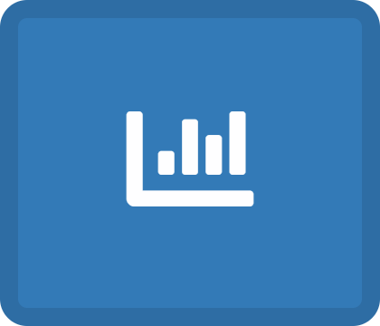 button in the upper right corner:
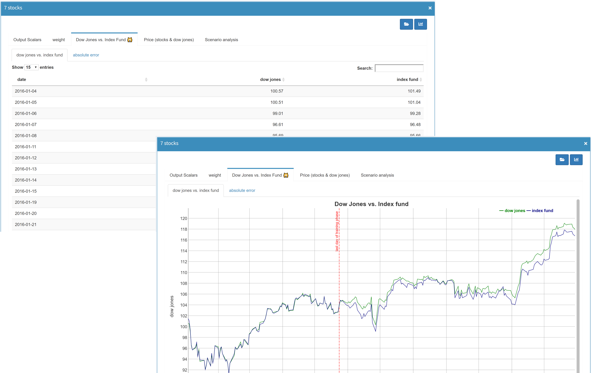
With the option Show graphic and data table in split screen in the section General in Configuration Mode, both data representations can be displayed next to each other: